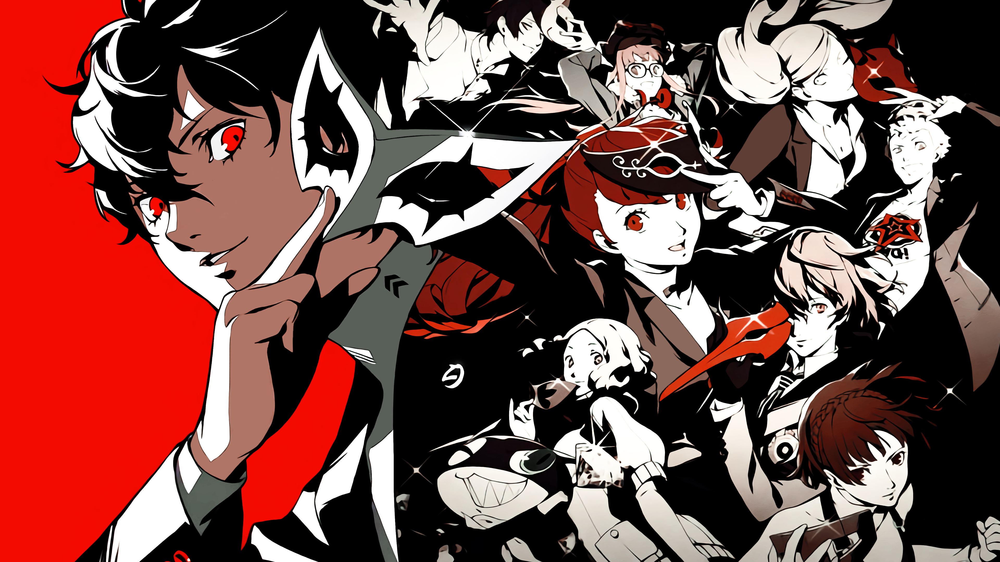

Sinopsis
Los eventos de Persona 5 se desarrollan en Tokio y narran los sucesos de vida del protagonista, cuyo nombre es decidido por el jugador, después de ser transferido a la Shujin Academy, tras ser condenado a un año de libertad condicional por un delito de agresión del que fue falsamente acusado. Durante el curso escolar, él y varios de sus compañeros despiertan los poderes de sus Personas y se convierten en los "Phantom Thieves of Hearts" (Ladrones Fantasma de Corazones), justicieros enmascarados que se dedican a recorrer un mundo sobrenatural llamado Metaverso, robando los deseos corruptos de los corazones de los adultos. Como en los títulos anteriores de la serie, el grupo debe combatir contra enemigos sobrenaturales utilizando las manifestaciones de sus psiques, que reciben el nombre de Personas. El juego incorpora elementos de rol, de exploración de mazmorras y situaciones de simulación social.
¿Donde puedo jugarlo?
EL juego original esta disponible para PlayStation®3 y PlayStation®4, Sin embargo la edicion Persona 5 Royale, la cual agrega contendo extra y aproximadamente una 20 horas de juego extra esta disponible en PlayStation®4 y PlayStation®5
